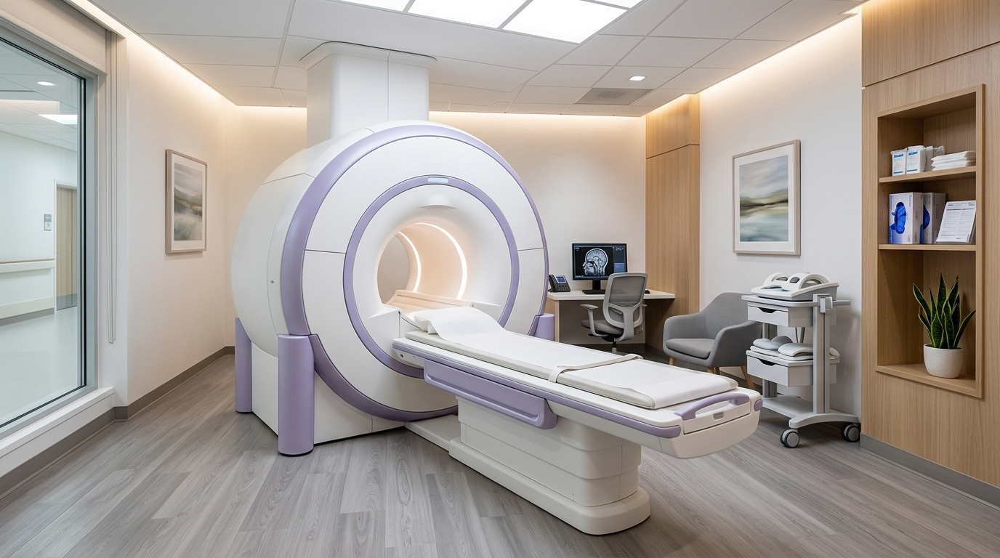
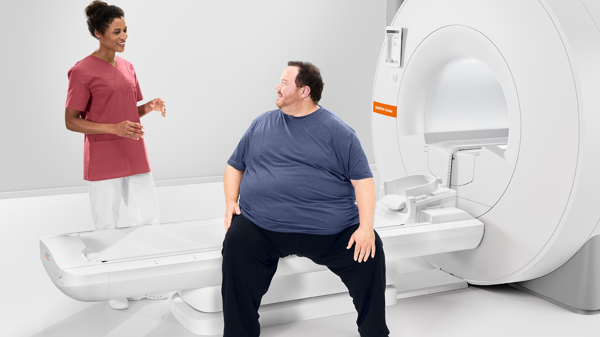
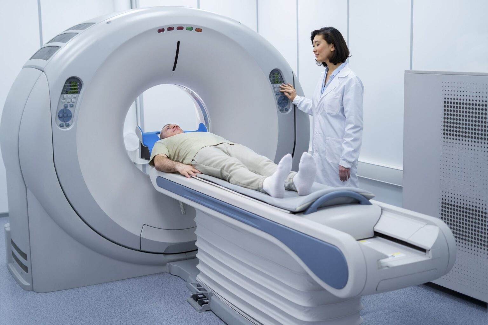
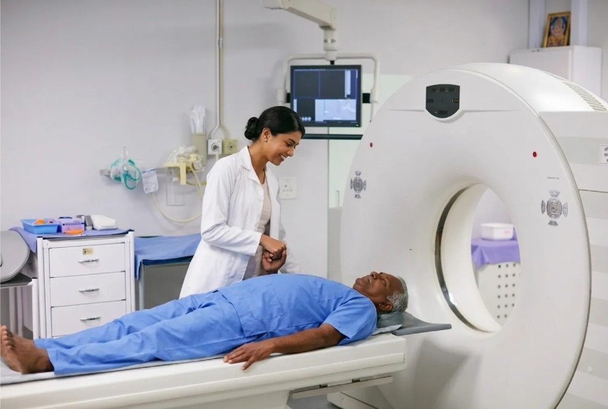
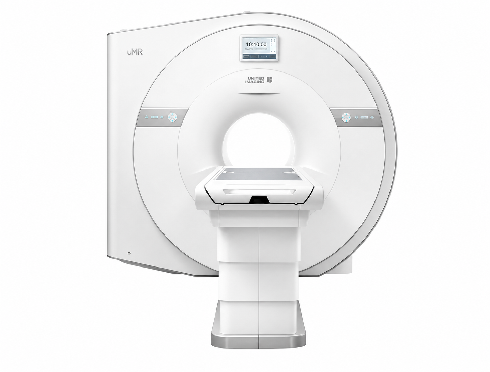

Advanced diagnostic imaging
Precision Diagnostics. Exceptional Care.
MRI and CT scans with accuracy you can trust, delivered by a team that puts your comfort first.
- 5
- Centres
- Digital
- Wide-Bore MRI
- Multi-Slice
- CT scan

Service schedule
Private Service
Open 24 hours for Private patientsOur expertise
MRI & CT imaging,
under one roof.
Advanced equipment and experienced teams help deliver detailed imaging, a more comfortable scan, and reliable results.

01
Digital MRI Scan
Digital wide-bore MRI imaging for detailed views of the brain, spine, joints, soft tissues and internal organs.
Explore MRI scanning
02
Multi-Slice CT Scan
Fast, precise cross-sectional imaging of bones, blood vessels and soft tissues for diagnosis and treatment planning.
Explore CT scanning
Why Unique WellCare
Technology that serves people.
Our centres combine modern imaging systems with clear guidance and thoughtful care through every step of your visit.
Advanced technology
High-resolution MRI and CT systems for accurate imaging.
Patient-first comfort
Wide-bore systems and a calm, supportive environment.
Clear guidance
Helpful preparation information and respectful staff support.
Timely reporting
Efficient workflows that help your care team move forward.
Transparent pricing
Affordable MRI & CT Scan Services.
High-quality diagnostic imaging accessible to everyone, with special provisions for government and IPD patients.
MRI Scan
Detailed magnetic resonance imaging
₹2,500 per scan
CT Scan
Fast, cross-sectional imaging
₹1,200 per scan
Our presence
Advanced care,
closer to home.
Choose a Unique WellCare centre near you for MRI and CT scan services.
Your patient journey
Simple. Supported.
Clear.
- 01
Book your appointment
Choose your centre and share your contact details.
- 02
Prepare for your scan
Bring your prescription and follow the preparation advice.
- 03
Scan with support
Our team guides you through a comfortable imaging visit.
- 04
Receive your results
Get clear reports to continue your care with confidence.
Patient experiences
Care remembered
for the right reasons.
Your health. Our priority.
Book your MRI or CT scan today.
Choose your nearest centre and our team will help with the next step.
Make An Appointment